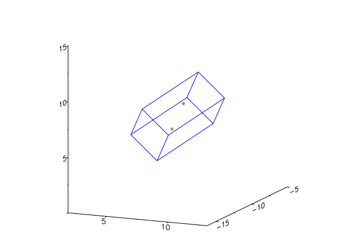

Introduction to FastHenryHelper
FastHenryHelper assists creating FastHenry input files using julia. Groups of FastHenry commands can be copied translated and rotated, keeping names unique for the copies. This simplifies creating input files with repetitive geometries, and reuse of groups of FastHenry commands.
This introduction does not attempt to explain FastHenry. See the FastHenry User's Guide.
Loading the modules
using FastHenryHelper
using Plots; gr() # using gr() backend for plots, plotly(), plotlyjs() also work.Creating a simple group
FastHenry commands are julia types which show their command. In FastHenryHelper these are all subtypes of the supertype Element.
n1 = Node(10,0,0)N_1 x=1.000000000e+01 y=0.000000000e+00 z=0.000000000e+00A name was not specified, so _1 was automatically generated. x, y, and z must always be specified. Default coordinates are not allowed.
A name can be specified as the first parameter.
n2 = Node(:abcd,0,0,0)Nabcd x=0.000000000e+00 y=0.000000000e+00 z=0.000000000e+00specifying names is not recommended. FastHenryHelper will not mutate user provided names to keep them unique when copies are made.
Segments connect nodes. Keyword parameters match the FastHenry keywords.
s1 = Segment(n1, n2, w=10, h=20, nwinc=5, nhinc=7)E_1 N_2 Nabcd
+ w=1.000000000e+01 h=2.000000000e+01 nhinc=7 nwinc=5Parameters may also be passed as a SegmentParameters object.
sp1 = SegmentParameters(w=10, h=20, nwinc=5, nhinc=7)
s1 = Segment(n1, n2, sp1)E_1 N_2 Nabcd
+ w=1.000000000e+01 h=2.000000000e+01 nhinc=7 nwinc=5A SegmentParameters object can be created by specifying the parameters that differ from another SegmentParameters object.
sp2 = SegmentParameters(sp1,w=5,h=3)
s2 = Segment(n1, n2, sp2)E_1 N_2 Nabcd
+ w=5.000000000e+00 h=3.000000000e+00 nhinc=7 nwinc=5Elements can be collected into groups. Auto-generated names are unique within the Group show is called on. Groups may be transformed (rotated, translated, etc.). Groups may be nested within each other (Group is a subtype of Element).
g1 = Group([n1,n2,s2])
g1 = Group(elements = [n1,n2,s2]) # or use keyword argumentN_1 x=1.000000000e+01 y=0.000000000e+00 z=0.000000000e+00
Nabcd x=0.000000000e+00 y=0.000000000e+00 z=0.000000000e+00
E_2 N_1 Nabcd
+ w=5.000000000e+00 h=3.000000000e+00 nhinc=7 nwinc=5Let's take a look.
plot(g1)/home/travis/.julia/packages/GR/joQgG/src/../deps/gr/bin/gksqt: error while loading shared libraries: libQt5Widgets.so.5: cannot open shared object file: No such file or directory
connect: Connection refused
GKS: can't connect to GKS socket application
Did you start 'gksqt'?
GKS: Open failed in routine OPEN_WS
GKS: GKS not in proper state. GKS must be either in the state WSOP or WSAC in routine ACTIVATE_WSRotate g1 π/4 around y and z axis and translate by 10 along x axis.
transformmatrix = ry(π/4) * rz(π/4) * txyz(10,0,0)
transform!(g1,transformmatrix)
g1N_1 x=1.000000000e+01 y=-1.414213562e+01 z=1.000000000e+01
Nabcd x=5.000000000e+00 y=-7.071067812e+00 z=5.000000000e+00
E_2 N_1 Nabcd
+ w=5.000000000e+00 h=3.000000000e+00 nhinc=7 nwinc=5
+ wx=-5.000000000e-01 wy=-7.071067812e-01 wz=-5.000000000e-01The wx, wy, wz vector for the segment has rotated from default and all automatically generated names are unique.
Plot after transform.
plot(g1)/home/travis/.julia/packages/GR/joQgG/src/../deps/gr/bin/gksqt: error while loading shared libraries: libQt5Widgets.so.5: cannot open shared object file: No such file or directory
connect: Connection refused
GKS: can't connect to GKS socket application
Did you start 'gksqt'?
GKS: Open failed in routine OPEN_WS
GKS: GKS not in proper state. GKS must be either in the state WSOP or WSAC in routine ACTIVATE_WS
Creating a Group with repetitive geometry
Create a square loop in the xy plane with a gap at the origin
n1 = Node(0,-1,0)
n2 = Node(0,-10,0)
n3 = Node(10,-10,0)
n4 = Node(10,10,0)
n5 = Node(0,10,0)
n6 = Node(0,1,0)
sp = SegmentParameters(h=2,w=3)
s1 = Segment(n1,n2,sp)
s2 = Segment(n2,n3,sp)
s3 = Segment(n3,n4,sp)
s4 = Segment(n4,n5,sp)
s5 = Segment(n5,n6,sp)
loop = Group([n1,n2,n3,n4,n5,n6,s1,s2,s3,s4,s5])N_1 x=0.000000000e+00 y=-1.000000000e+00 z=0.000000000e+00
N_2 x=0.000000000e+00 y=-1.000000000e+01 z=0.000000000e+00
N_3 x=1.000000000e+01 y=-1.000000000e+01 z=0.000000000e+00
N_4 x=1.000000000e+01 y=1.000000000e+01 z=0.000000000e+00
N_5 x=0.000000000e+00 y=1.000000000e+01 z=0.000000000e+00
N_6 x=0.000000000e+00 y=1.000000000e+00 z=0.000000000e+00
E_7 N_1 N_2
+ w=3.000000000e+00 h=2.000000000e+00
E_8 N_2 N_3
+ w=3.000000000e+00 h=2.000000000e+00
E_9 N_3 N_4
+ w=3.000000000e+00 h=2.000000000e+00
E_10 N_4 N_5
+ w=3.000000000e+00 h=2.000000000e+00
E_11 N_5 N_6
+ w=3.000000000e+00 h=2.000000000e+00Take a look.
plot(loop)/home/travis/.julia/packages/GR/joQgG/src/../deps/gr/bin/gksqt: error while loading shared libraries: libQt5Widgets.so.5: cannot open shared object file: No such file or directory
connect: Connection refused
GKS: can't connect to GKS socket application
Did you start 'gksqt'?
GKS: Open failed in routine OPEN_WS
GKS: GKS not in proper state. GKS must be either in the state WSOP or WSAC in routine ACTIVATE_WSGroups have a dictionary of terminals, nodes which are external connection points, for the group. In this case n1 and n6 are the terminals.
t = terms(loop)
t[:a] = n1
t[:b] = n6;loop can be defined more concisely using element and terms keyword arguments and the function connectnodes.
n1 = Node(0,-1,0)
n2 = Node(0,-10,0)
n3 = Node(10,-10,0)
n4 = Node(10,10,0)
n5 = Node(0,10,0)
n6 = Node(0,1,0)
loop = Group(
elements = [
n1,
n2,
n3,
n4,
n5,
n6,
connectnodes([n1,n2,n3,n4,n5,n6], SegmentParameters(h=2,w=3))...
],
terms = Dict(:a=>n1,:b=>n6)
)N_1 x=0.000000000e+00 y=-1.000000000e+00 z=0.000000000e+00
N_2 x=0.000000000e+00 y=-1.000000000e+01 z=0.000000000e+00
N_3 x=1.000000000e+01 y=-1.000000000e+01 z=0.000000000e+00
N_4 x=1.000000000e+01 y=1.000000000e+01 z=0.000000000e+00
N_5 x=0.000000000e+00 y=1.000000000e+01 z=0.000000000e+00
N_6 x=0.000000000e+00 y=1.000000000e+00 z=0.000000000e+00
E_7 N_1 N_2
+ w=3.000000000e+00 h=2.000000000e+00
E_8 N_2 N_3
+ w=3.000000000e+00 h=2.000000000e+00
E_9 N_3 N_4
+ w=3.000000000e+00 h=2.000000000e+00
E_10 N_4 N_5
+ w=3.000000000e+00 h=2.000000000e+00
E_11 N_5 N_6
+ w=3.000000000e+00 h=2.000000000e+00Shift loop 5 along x axis
transform!(loop,txyz(5,0,0))Create array of 8 loops each rotated π/4 around y axis
tm = ry(π/4)
loops = Array{Group}(undef,8)
for i in 1:8
transform!(loop,tm)
loops[i] = deepcopy(loop)
endCreate a group of the loops.
loopsgroup = Group(loops)N_1 x=3.535533906e+00 y=-1.000000000e+00 z=3.535533906e+00
N_2 x=3.535533906e+00 y=-1.000000000e+01 z=3.535533906e+00
N_3 x=1.060660172e+01 y=-1.000000000e+01 z=1.060660172e+01
N_4 x=1.060660172e+01 y=1.000000000e+01 z=1.060660172e+01
N_5 x=3.535533906e+00 y=1.000000000e+01 z=3.535533906e+00
N_6 x=3.535533906e+00 y=1.000000000e+00 z=3.535533906e+00
E_7 N_1 N_2
+ w=3.000000000e+00 h=2.000000000e+00
+ wx=7.071067812e-01 wy=0.000000000e+00 wz=7.071067812e-01
E_8 N_2 N_3
+ w=3.000000000e+00 h=2.000000000e+00
+ wx=0.000000000e+00 wy=1.000000000e+00 wz=0.000000000e+00
E_9 N_3 N_4
+ w=3.000000000e+00 h=2.000000000e+00
+ wx=-7.071067812e-01 wy=0.000000000e+00 wz=-7.071067812e-01
E_10 N_4 N_5
+ w=3.000000000e+00 h=2.000000000e+00
+ wx=0.000000000e+00 wy=-1.000000000e+00 wz=0.000000000e+00
E_11 N_5 N_6
+ w=3.000000000e+00 h=2.000000000e+00
+ wx=7.071067812e-01 wy=0.000000000e+00 wz=7.071067812e-01
N_12 x=8.873450063e-16 y=-1.000000000e+00 z=5.000000000e+00
N_13 x=8.873450063e-16 y=-1.000000000e+01 z=5.000000000e+00
N_14 x=2.531964301e-15 y=-1.000000000e+01 z=1.500000000e+01
N_15 x=2.531964301e-15 y=1.000000000e+01 z=1.500000000e+01
N_16 x=8.873450063e-16 y=1.000000000e+01 z=5.000000000e+00
N_17 x=8.873450063e-16 y=1.000000000e+00 z=5.000000000e+00
E_18 N_12 N_13
+ w=3.000000000e+00 h=2.000000000e+00
+ wx=2.220446049e-16 wy=0.000000000e+00 wz=1.000000000e+00
E_19 N_13 N_14
+ w=3.000000000e+00 h=2.000000000e+00
+ wx=0.000000000e+00 wy=1.000000000e+00 wz=0.000000000e+00
E_20 N_14 N_15
+ w=3.000000000e+00 h=2.000000000e+00
+ wx=-2.220446049e-16 wy=0.000000000e+00 wz=-1.000000000e+00
E_21 N_15 N_16
+ w=3.000000000e+00 h=2.000000000e+00
+ wx=0.000000000e+00 wy=-1.000000000e+00 wz=0.000000000e+00
E_22 N_16 N_17
+ w=3.000000000e+00 h=2.000000000e+00
+ wx=2.220446049e-16 wy=0.000000000e+00 wz=1.000000000e+00
N_23 x=-3.535533906e+00 y=-1.000000000e+00 z=3.535533906e+00
N_24 x=-3.535533906e+00 y=-1.000000000e+01 z=3.535533906e+00
N_25 x=-1.060660172e+01 y=-1.000000000e+01 z=1.060660172e+01
N_26 x=-1.060660172e+01 y=1.000000000e+01 z=1.060660172e+01
N_27 x=-3.535533906e+00 y=1.000000000e+01 z=3.535533906e+00
N_28 x=-3.535533906e+00 y=1.000000000e+00 z=3.535533906e+00
E_29 N_23 N_24
+ w=3.000000000e+00 h=2.000000000e+00
+ wx=-7.071067812e-01 wy=0.000000000e+00 wz=7.071067812e-01
E_30 N_24 N_25
+ w=3.000000000e+00 h=2.000000000e+00
+ wx=0.000000000e+00 wy=1.000000000e+00 wz=0.000000000e+00
E_31 N_25 N_26
+ w=3.000000000e+00 h=2.000000000e+00
+ wx=7.071067812e-01 wy=0.000000000e+00 wz=-7.071067812e-01
E_32 N_26 N_27
+ w=3.000000000e+00 h=2.000000000e+00
+ wx=0.000000000e+00 wy=-1.000000000e+00 wz=0.000000000e+00
E_33 N_27 N_28
+ w=3.000000000e+00 h=2.000000000e+00
+ wx=-7.071067812e-01 wy=0.000000000e+00 wz=7.071067812e-01
N_34 x=-5.000000000e+00 y=-1.000000000e+00 z=1.779501213e-15
N_35 x=-5.000000000e+00 y=-1.000000000e+01 z=1.779501213e-15
N_36 x=-1.500000000e+01 y=-1.000000000e+01 z=4.710466656e-15
N_37 x=-1.500000000e+01 y=1.000000000e+01 z=4.710466656e-15
N_38 x=-5.000000000e+00 y=1.000000000e+01 z=1.779501213e-15
N_39 x=-5.000000000e+00 y=1.000000000e+00 z=1.779501213e-15
E_40 N_34 N_35
+ w=3.000000000e+00 h=2.000000000e+00
+ wx=-1.000000000e+00 wy=0.000000000e+00 wz=2.775557562e-16
E_41 N_35 N_36
+ w=3.000000000e+00 h=2.000000000e+00
+ wx=0.000000000e+00 wy=1.000000000e+00 wz=0.000000000e+00
E_42 N_36 N_37
+ w=3.000000000e+00 h=2.000000000e+00
+ wx=1.000000000e+00 wy=0.000000000e+00 wz=-2.775557562e-16
E_43 N_37 N_38
+ w=3.000000000e+00 h=2.000000000e+00
+ wx=0.000000000e+00 wy=-1.000000000e+00 wz=0.000000000e+00
E_44 N_38 N_39
+ w=3.000000000e+00 h=2.000000000e+00
+ wx=-1.000000000e+00 wy=0.000000000e+00 wz=2.775557562e-16
N_45 x=-3.535533906e+00 y=-1.000000000e+00 z=-3.535533906e+00
N_46 x=-3.535533906e+00 y=-1.000000000e+01 z=-3.535533906e+00
N_47 x=-1.060660172e+01 y=-1.000000000e+01 z=-1.060660172e+01
N_48 x=-1.060660172e+01 y=1.000000000e+01 z=-1.060660172e+01
N_49 x=-3.535533906e+00 y=1.000000000e+01 z=-3.535533906e+00
N_50 x=-3.535533906e+00 y=1.000000000e+00 z=-3.535533906e+00
E_51 N_45 N_46
+ w=3.000000000e+00 h=2.000000000e+00
+ wx=-7.071067812e-01 wy=0.000000000e+00 wz=-7.071067812e-01
E_52 N_46 N_47
+ w=3.000000000e+00 h=2.000000000e+00
+ wx=0.000000000e+00 wy=1.000000000e+00 wz=0.000000000e+00
E_53 N_47 N_48
+ w=3.000000000e+00 h=2.000000000e+00
+ wx=7.071067812e-01 wy=0.000000000e+00 wz=7.071067812e-01
E_54 N_48 N_49
+ w=3.000000000e+00 h=2.000000000e+00
+ wx=0.000000000e+00 wy=-1.000000000e+00 wz=0.000000000e+00
E_55 N_49 N_50
+ w=3.000000000e+00 h=2.000000000e+00
+ wx=-7.071067812e-01 wy=0.000000000e+00 wz=-7.071067812e-01
N_56 x=-2.717578901e-15 y=-1.000000000e+00 z=-5.000000000e+00
N_57 x=-2.717578901e-15 y=-1.000000000e+01 z=-5.000000000e+00
N_58 x=-5.932290654e-15 y=-1.000000000e+01 z=-1.500000000e+01
N_59 x=-5.932290654e-15 y=1.000000000e+01 z=-1.500000000e+01
N_60 x=-2.717578901e-15 y=1.000000000e+01 z=-5.000000000e+00
N_61 x=-2.717578901e-15 y=1.000000000e+00 z=-5.000000000e+00
E_62 N_56 N_57
+ w=3.000000000e+00 h=2.000000000e+00
+ wx=-4.440892099e-16 wy=0.000000000e+00 wz=-1.000000000e+00
E_63 N_57 N_58
+ w=3.000000000e+00 h=2.000000000e+00
+ wx=0.000000000e+00 wy=1.000000000e+00 wz=0.000000000e+00
E_64 N_58 N_59
+ w=3.000000000e+00 h=2.000000000e+00
+ wx=4.440892099e-16 wy=0.000000000e+00 wz=1.000000000e+00
E_65 N_59 N_60
+ w=3.000000000e+00 h=2.000000000e+00
+ wx=0.000000000e+00 wy=-1.000000000e+00 wz=0.000000000e+00
E_66 N_60 N_61
+ w=3.000000000e+00 h=2.000000000e+00
+ wx=-4.440892099e-16 wy=0.000000000e+00 wz=-1.000000000e+00
N_67 x=3.535533906e+00 y=-1.000000000e+00 z=-3.535533906e+00
N_68 x=3.535533906e+00 y=-1.000000000e+01 z=-3.535533906e+00
N_69 x=1.060660172e+01 y=-1.000000000e+01 z=-1.060660172e+01
N_70 x=1.060660172e+01 y=1.000000000e+01 z=-1.060660172e+01
N_71 x=3.535533906e+00 y=1.000000000e+01 z=-3.535533906e+00
N_72 x=3.535533906e+00 y=1.000000000e+00 z=-3.535533906e+00
E_73 N_67 N_68
+ w=3.000000000e+00 h=2.000000000e+00
+ wx=7.071067812e-01 wy=0.000000000e+00 wz=-7.071067812e-01
E_74 N_68 N_69
+ w=3.000000000e+00 h=2.000000000e+00
+ wx=0.000000000e+00 wy=1.000000000e+00 wz=0.000000000e+00
E_75 N_69 N_70
+ w=3.000000000e+00 h=2.000000000e+00
+ wx=-7.071067812e-01 wy=0.000000000e+00 wz=7.071067812e-01
E_76 N_70 N_71
+ w=3.000000000e+00 h=2.000000000e+00
+ wx=0.000000000e+00 wy=-1.000000000e+00 wz=0.000000000e+00
E_77 N_71 N_72
+ w=3.000000000e+00 h=2.000000000e+00
+ wx=7.071067812e-01 wy=0.000000000e+00 wz=-7.071067812e-01
N_78 x=5.000000000e+00 y=-1.000000000e+00 z=-3.609735108e-15
N_79 x=5.000000000e+00 y=-1.000000000e+01 z=-3.609735108e-15
N_80 x=1.500000000e+01 y=-1.000000000e+01 z=-8.631075882e-15
N_81 x=1.500000000e+01 y=1.000000000e+01 z=-8.631075882e-15
N_82 x=5.000000000e+00 y=1.000000000e+01 z=-3.609735108e-15
N_83 x=5.000000000e+00 y=1.000000000e+00 z=-3.609735108e-15
E_84 N_78 N_79
+ w=3.000000000e+00 h=2.000000000e+00
+ wx=1.000000000e+00 wy=0.000000000e+00 wz=-6.661338148e-16
E_85 N_79 N_80
+ w=3.000000000e+00 h=2.000000000e+00
+ wx=0.000000000e+00 wy=1.000000000e+00 wz=0.000000000e+00
E_86 N_80 N_81
+ w=3.000000000e+00 h=2.000000000e+00
+ wx=-1.000000000e+00 wy=0.000000000e+00 wz=6.661338148e-16
E_87 N_81 N_82
+ w=3.000000000e+00 h=2.000000000e+00
+ wx=0.000000000e+00 wy=-1.000000000e+00 wz=0.000000000e+00
E_88 N_82 N_83
+ w=3.000000000e+00 h=2.000000000e+00
+ wx=1.000000000e+00 wy=0.000000000e+00 wz=-6.661338148e-16Take a look.
plot(loopsgroup)┌ Warning: You created n=210 groups... Is that intended?
└ @ Plots ~/.julia/packages/Plots/EJpx2/src/args.jl:1073
/home/travis/.julia/packages/GR/joQgG/src/../deps/gr/bin/gksqt: error while loading shared libraries: libQt5Widgets.so.5: cannot open shared object file: No such file or directory
connect: Connection refused
GKS: can't connect to GKS socket application
Did you start 'gksqt'?
GKS: Open failed in routine OPEN_WS
GKS: GKS not in proper state. GKS must be either in the state WSOP or WSAC in routine ACTIVATE_WSDefine a port for each loop.
ex = []
for loop in loops
push!(ex, External(loop[:a],loop[:b])) # use terminals we defined
end
externalgroup = Group(ex).external N_1 N_2
.external N_3 N_4
.external N_5 N_6
.external N_7 N_8
.external N_9 N_10
.external N_11 N_12
.external N_13 N_14
.external N_15 N_16Create top level group.
eightloops = Group(
elements = [
Units("mm"),
Default(SegmentParameters(sigma=62.1e6*1e-3, nwinc=7, nhinc=5)),
loopsgroup,
externalgroup,
Freq(min=1e-1, max=1e9, ndec=0.05),
End()
]
);Write to file.
open("eightloops.inp","w") do io
print(io,eightloops)
endFastHenry was run with "eightloops.inp" input file.
FastHenryHelper does not call FastHenry.view eightloops.inp.
view FastHenry output eightloopsZc.mat.
The FastHenry .mat output file can be parsed.
result = parsefasthenrymat("eightloopsZc.mat")
result.impedance8×8×1 Array{Complex{Float64},3}:
[:, :, 1] =
0.000155674+1.27315e-5im … 2.98938e-9+2.36359e-6im
2.98016e-9+2.36158e-6im 1.65626e-9+6.54598e-7im
1.68796e-9+6.48741e-7im 1.68117e-9+2.49026e-7im
1.66033e-9+2.4436e-7im 1.68097e-9+1.6522e-7im
1.6475e-9+1.59819e-7im 1.71294e-9+2.53917e-7im
1.66033e-9+2.4436e-7im … 1.68499e-9+6.59077e-7im
1.68797e-9+6.48741e-7im 2.9723e-9+2.35745e-6im
2.98013e-9+2.36158e-6im 0.000155674+1.27291e-5imGroup units
In addition to the Units type, units may be specified for a Group using the units keyword. Group units only apply to the elements in the Group.
groupunitexample = Group(
elements = [
Units("cm"),
Node(1,0,0),
Group(
elements = [
Node(20,0,0)
],
units = Units("mm")
),
Node(3,0,0)
]
).units cm
N_1 x=1.000000000e+00 y=0.000000000e+00 z=0.000000000e+00
.units mm
N_2 x=2.000000000e+01 y=0.000000000e+00 z=0.000000000e+00
.units cm
N_3 x=3.000000000e+00 y=0.000000000e+00 z=0.000000000e+00